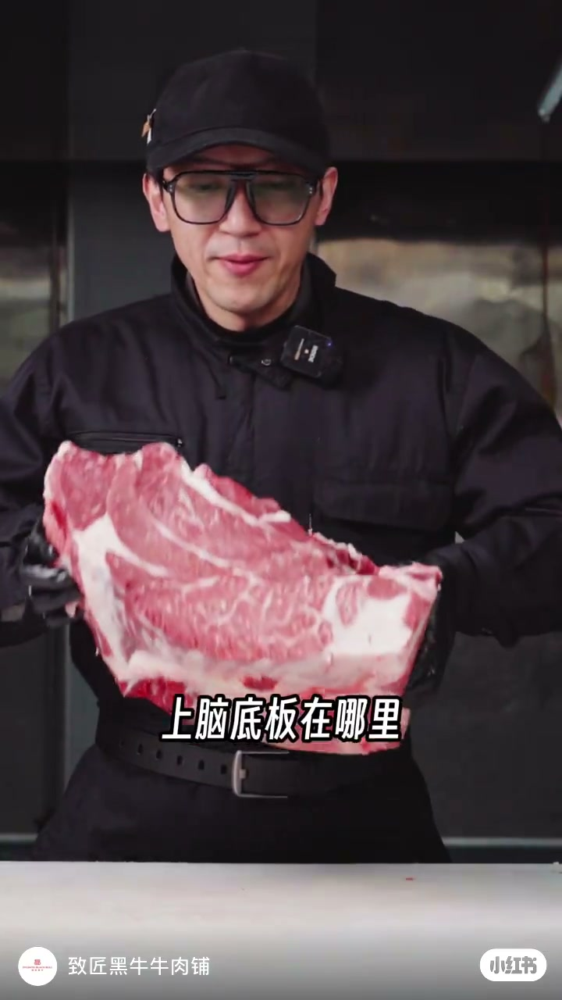
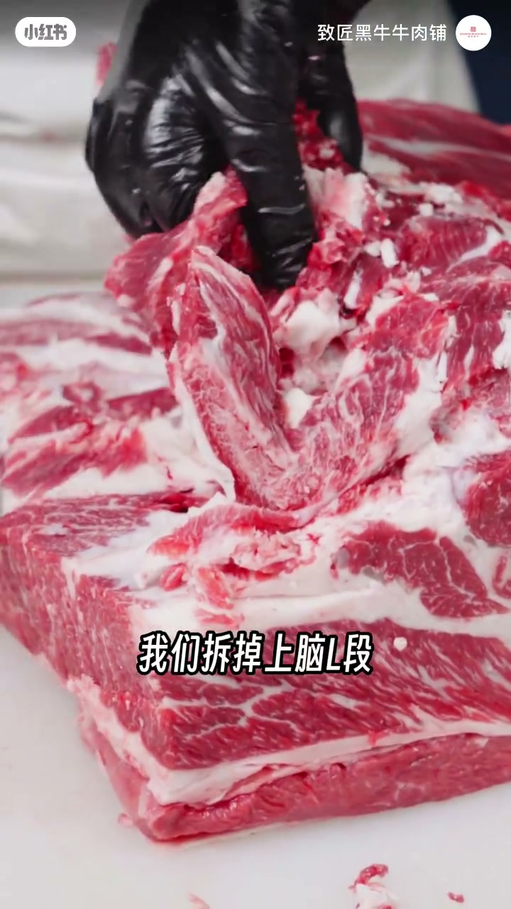
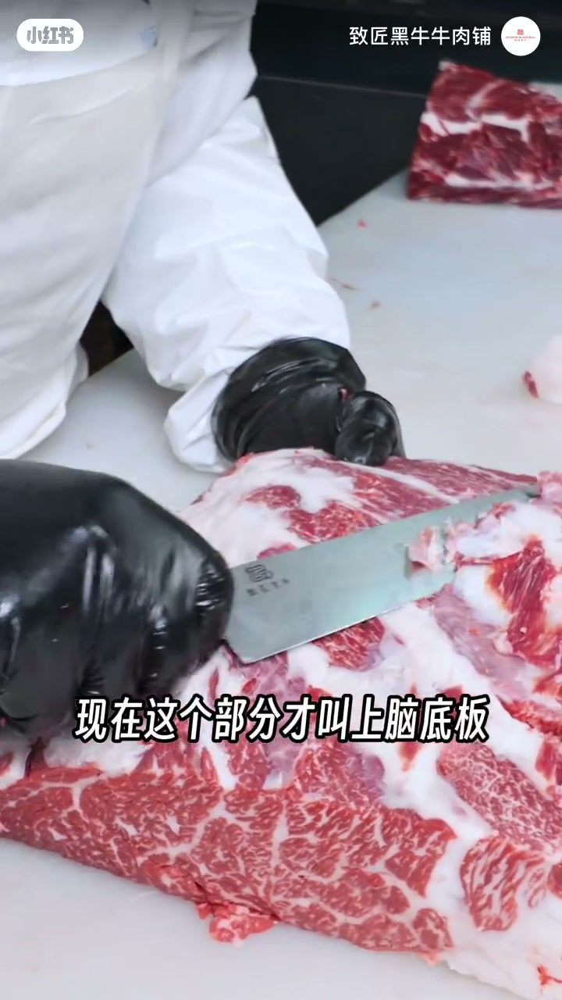
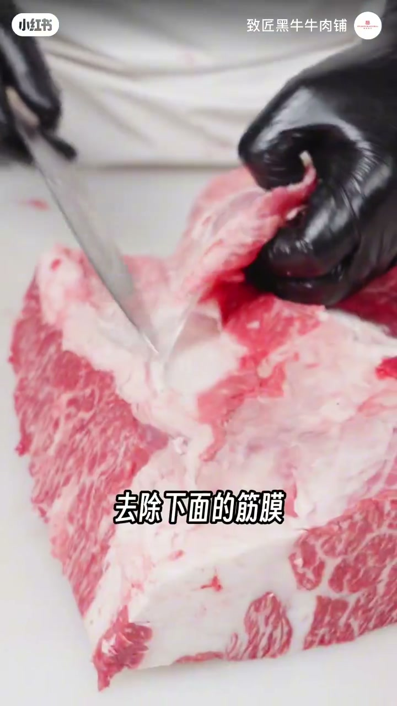
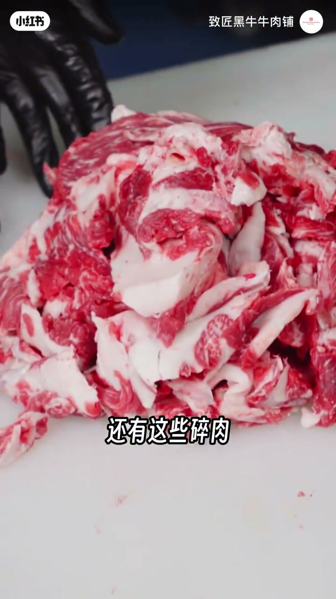

内容要点
致匠黑牛演示上脑底板的定位与精修：它位于肋条筋皮一带，需从上脑L段拆分——上方拆下的是上脑心，下方才是上脑底板（日本称「第二种」）。低等级牛往往出不来，单独精修损耗高、价值高，但并非每头和牛都能分出这一刀。
知识结构
上脑底板在肋条筋皮下方；沿肋骨缝拆掉上脑L段上方部分得上脑心，下方才是上脑底板。
日本称第二种；低等级牛第一薄、第二等级不够，口感达不到标准。
多修一刀、本可与L段一起卖，单独修出价值很高，但不是每头和牛都能分出。
去筋膜杂肉与表面筋皮，修下料进肉筋；肉本身几乎无筋皮。末段口播噪声大，以画面操作为准。
上脑底板是「有等级才出得来」的部位：多一刀精修带来更高损耗与更高单价，买的人要认清它和上脑心、上脑L段的解剖关系，别把普通上脑当底板。
00:00-00:47先分清：上脑心在上，底板在下
开场直接问「上脑底板在哪里」，随即给出位置：肋条的筋皮下方，开始拆底板。操作路径是「沿着肋骨的缝」，拆掉上脑L段上边的一个部分——「拆下来这个部分叫上脑心」，「下面这个部分就是上脑底板」。
他又重复对照：「这个部分叫上脑心……现在这个部分才叫上脑底板」，并补充日本叫法「第二种」。对学习者而言，先把两块肉在解剖上分开，比背名字更重要。



00:47-01:32不是每头牛都能出：薄、等级、损耗
门槛写得很硬：上脑底板一般低等级的牛是出不来的——「第一薄，第二等级不够，所以口感达不到标准」。出这个部位的损耗非常高，因为多修出了一刀；本身它可以和上脑L段一起卖，如果单修下来「这块肉的价值会非常的高」，「但是不是每头和牛都能分出这个部位」。

01:14-02:31精修：筋膜杂肉去掉，表面筋皮清干净
实操上要去除下面的筋膜和多余的杂肉，修下来的肉会放在肉筋里；表面的筋皮需要全部去掉。「这个肉本身是没有筋皮的」——再一次强调稀缺性：因为不是每头牛都能分出来上脑底板。
片尾约01:57后 Whisper 出现大段乱码，以画面精修动作为准，不采信该段ASR文本。

完整转录（24段）
以下文本由 Whisper medium 模型自动转录，可能存在少量识别误差，已尽可能修正。
上档底板在哪里
上档底板的位置是肋条的筋皮
下面开始拆底板
沿着肋骨的缝缝
我们拆掉上档L段上边的一个部分
拆下来这个部分叫上脑心
下面这个部分就是上脑底板
日本叫它做第二种
这个部分叫上脑心
现在这个部分才叫上脑底板
上脑底板一般低等级的牛是出不来的
第一薄 第二等级不够
所以口感达不到标准
出这个部位的损耗是非常的高的
因为多修出了一刀
本身它可以和上档L段一起卖的
如果单修下来这块肉的价值会非常的高
但是不是每头和牛都能分出这个部位
去除下面的筋膜和多余的杂肉
修下来的这些肉会放在肉筋里面
表面的筋皮需要全部的去掉
这个肉本身是没有筋皮的
因为不是每头牛都能分的出来上档底板
...' and…... The-! the' T